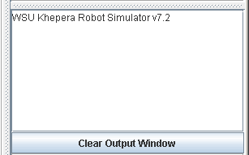

|
|
Sending & Recieving Text |
|---|
At times, you may want to view messages from your controller as it
executes. You can use standard
I/O streams from your control code to do this; in this case use the DOS
prompt or the Unix terminal window you started the simulator from. This
can be rather messy since many users may not have a large enough desktop
to display both windows. The alternative is to use the text output
panel on the interface. (See the MessagePasser class in the API help).
Output Panel

Click on the Clear Output Window button to clear the output
area.